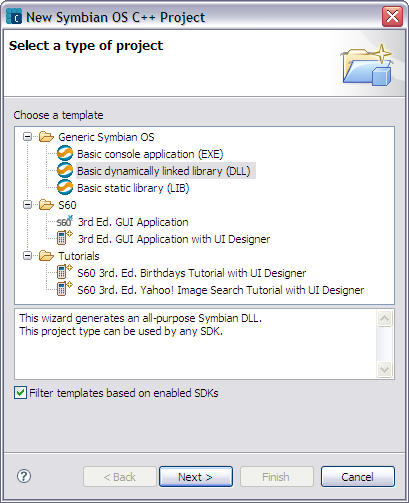
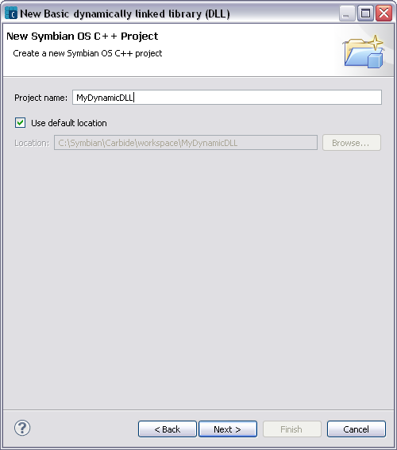
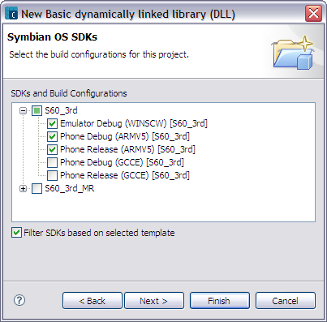
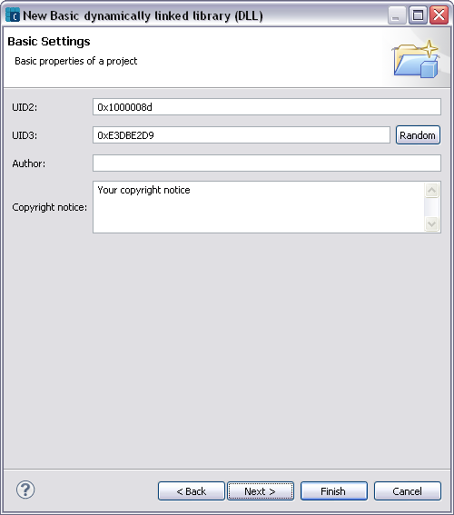
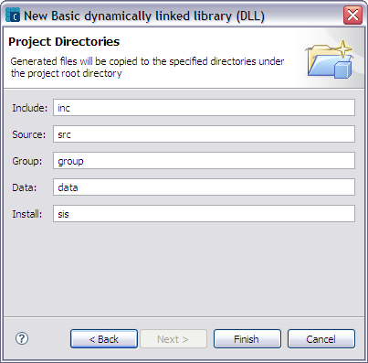
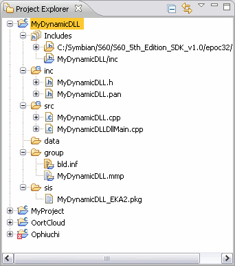

This section will walk through the process of creating a simple “Test1” DLL project. For more information on creating a new project, see Tasks > Creating New Projects.
To start, click File > New > Project to invoke the New Project wizard. Select Symbian OS C++ Project in the Symbian OS folder and click Next to continue with the following steps:

Figure 1 - Select Basic DLL

Figure 2 - Specify Project Name and Location
NOTE This dialog will show SDKs installed on your PC.

Figure 3 - Symbian OS SDKs and Build Configurations

Figure 4 - Basic Settings page

Figure 5- Project Directories page
This completes the simple “test1” DLL project creation. The image below shows the expanded project view.
